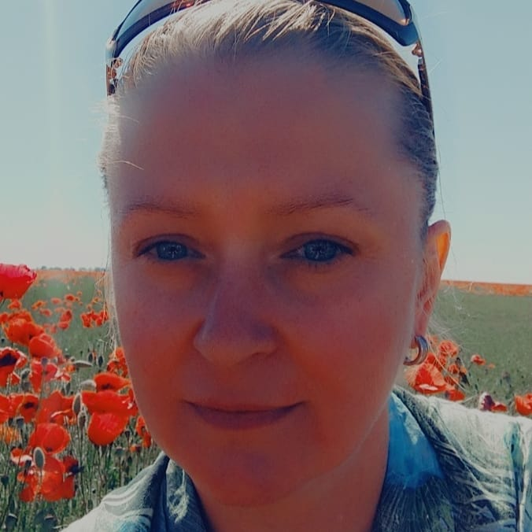

Моя первая главная страница

Здравствуйте, меня зовут Крупинская Ольга Викторовна, и это моя первая сверстанная страница.
В настоящий момент я прохожу обучение по курсу "Frontend разработка" в учебном центре "Профессионал"
- Скоро я буду уметь:
- верстать сайты на HTML и CSS;
- встраивать сценарии Javascript в HTML-документы;
- создавать циклы, функции; определять и вызывать функции;
создавать и обрабатывать массивы; создавать объект; - применять методы работы с промежутками времени;
- применять изменение стилей документа;
- создавать движущиеся изображения;
- применять каскадные таблицы стилей для создания динамических элементов страницы;
- изменять фоновый цвет и изображения; осуществлять смену стилей текста и ссылок;
- программировать анимацию; создавать выпадающее меню;
- применять методы передачи информации из формы;
использовать сценарии JavaScript для проверки форм; - блокировать и скрывать элементы формы;
- применять DOM для создания динамических эффектов;
- отбирать элементы страницы с помощью селекторов;
- манипулировать элементами страницы средствами Pure JS or jQuery;
- применять библиотеки JavaScript при разработке сайтов;
- применять фреймворки JavaScript при разработке сайтов.
Планирую не останавливаться на достигнутом!